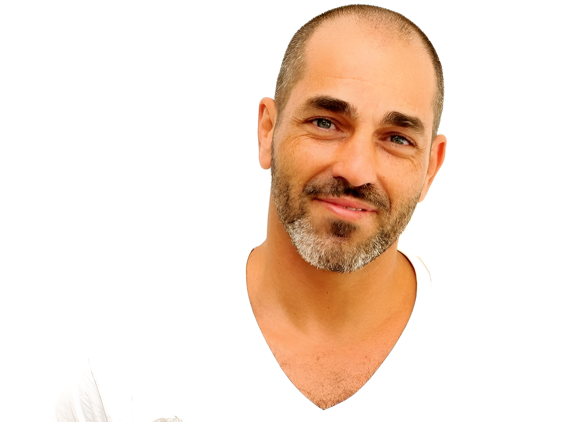
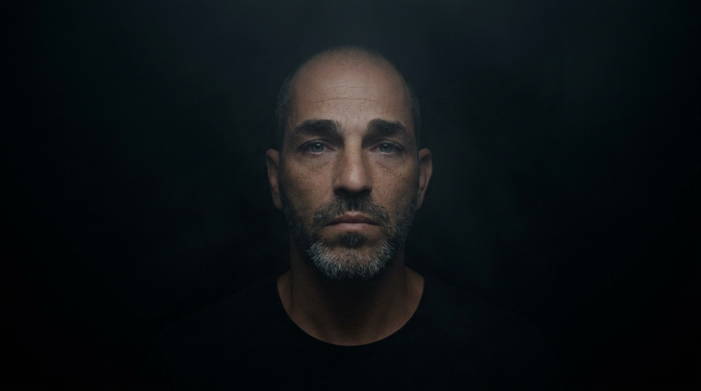
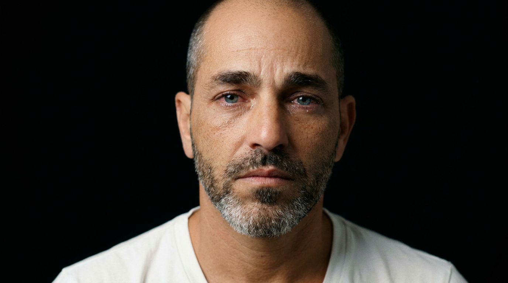
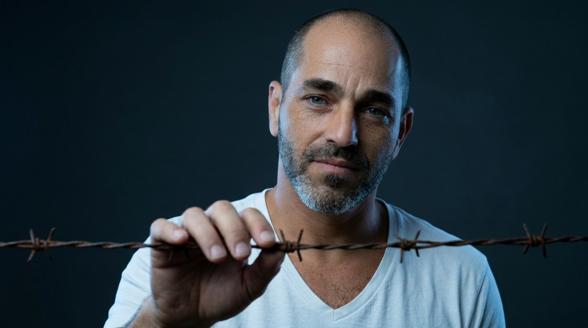
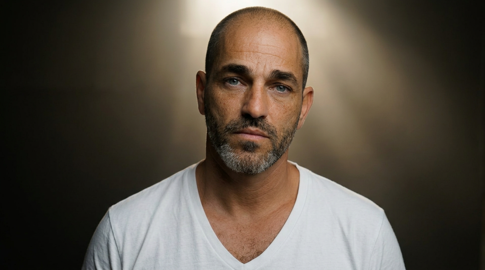
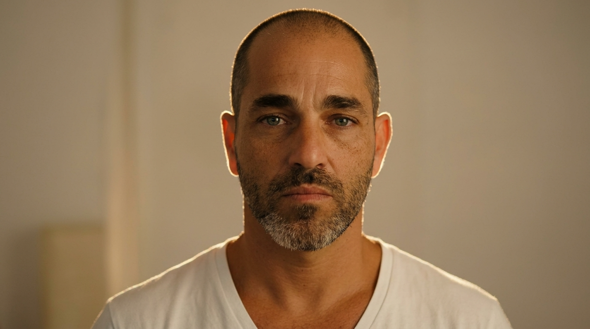
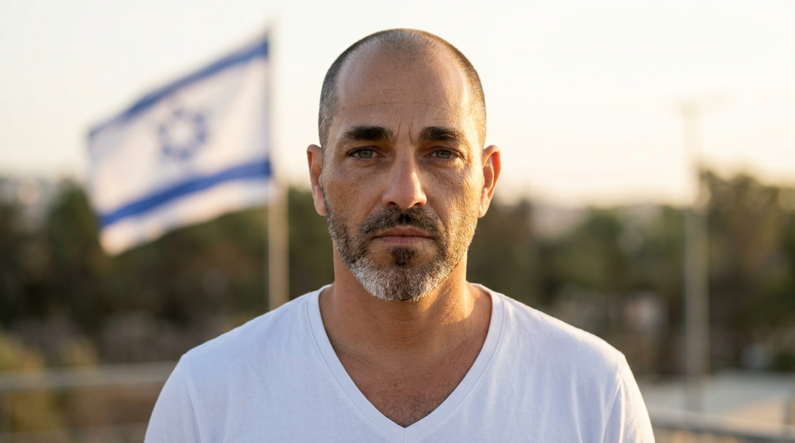
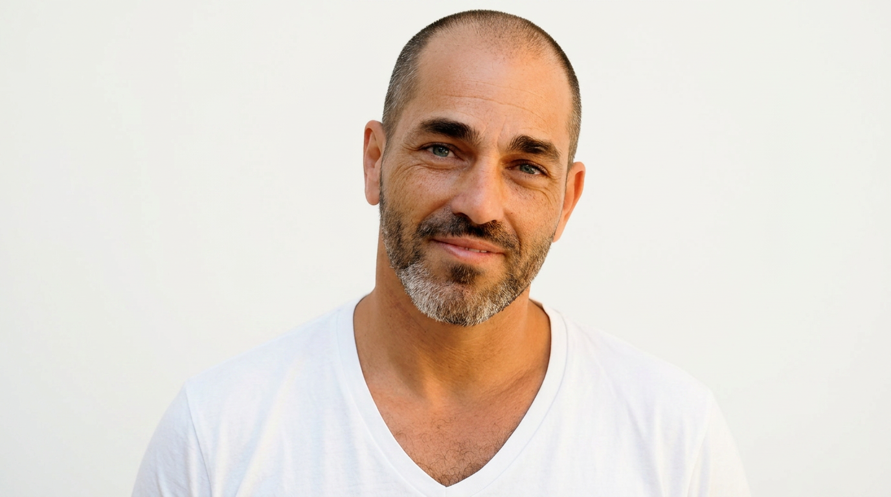

הסרטון שראית לא צולם במצלמה. הוא נבנה מתמונה אחת בלבד, שהפכה בהדרגה לרצף של רגעים, ואז לסיפור ויזואלי שלם.
במקום ליצור סרטון בדרך הרגילה, יצרנו תמונת בסיס אחת, סדרת פריימים שנבנו ממנה, אנימציה עדינה לכל פריים, חיבור מדויק בין הקטעים וסאונד שמוסיף עומק רגשי.
במילים פשוטות: לקחנו תמונה אחת — והפכנו אותה לסרטון.
לפני / אחרי
מתמונה אחת לסיפור שלם
כאן התחיל הכל — מתמונה אחת בודדת. ומכאן נבנה סרטון שלם עם שינוי באור, אווירה, קצב ורגש.
תמונת המקור

הסרטון הסופי
תמונה אחת. כמה רגעים. סיפור אחד.
התהליך
איך יצרנו את זה שלב אחר שלב
הסוד כאן הוא לא "כלי קסם", אלא תהליך מדויק. כשמפרקים אותו נכון, מבינים שכל שלב עושה עבודה אחת ברורה — וביחד נוצר הסיפור.
1
מתחילים מתמונה אחת נכונה
הצעד הראשון היה לבחור תמונה שתהיה בסיס יציב לכל הסיפור. כדי שזה יעבוד טוב, התמונה צריכה להיות:
ברורה, עם פנים גלויות
בלי פילטרים אגרסיביים
בלי רקע עמוס
עם הבעה טבעית יחסית
ככל שתמונת הבסיס נקייה ומדויקת יותר, כך קל יותר לשמור על אותה זהות לאורך כל הפריימים.
2
בונים את הסיפור תמונה אחרי תמונה
במקום לנסות לייצר סרטון שלם בבת אחת, יצרנו קודם שבע תמונות שונות של אותה דמות — כל אחת מייצגת רגע אחר במסע: חושך, תקריב רגשי, מגע סמלי, תחילת אור, עמידה חזקה, תקווה ברקע וסיום רגוע.
הדבר הקריטי: לשמור על אותה זהות, זווית מצלמה ופריים — שינוי עדין בלבד בין תמונה לתמונה.
1

2

3

4

5

6

שבעת הפריימים המלאים
1
2
3
4
5
6
7

רוצים לראות איך נראו הפרומפטים לתמונות?
פרומפט לתמונה 1 — חושך מוחלט
Use the uploaded reference image as the exact identity reference.
STRICT IDENTITY LOCK: preserve 100% facial features, proportions, eyes, nose, mouth, and expression.
Same person in all images. No changes in identity across frames.
Ultra-realistic, cinematic lighting, 35mm lens, high detail, natural skin texture, no stylization, no beautification.
Medium shot, centered subject, same framing and same camera angle in all images, eye-level camera.
A man standing completely alone in deep darkness, barely visible. Only a very faint soft light from above partially reveals his face. Heavy emotional atmosphere, subtle fog, black background, cinematic shadows, quiet and respectful Holocaust remembrance tone, minimal environment, no objects, no text, no additional elements.
מה רואים בפועל? זה הפריים שפתח את הסיפור. הרעיון היה ליצור תחושה של בדידות, חושך ואיפוק — בלי דרמה מוגזמת ובלי אובייקטים שמסיחים את העין.
אחרי שהיו לנו כל התמונות, לא חיברנו אותן מיד. בשלב הבא לקחנו כל תמונה בנפרד והפכנו אותה לקליפ קצר. אבל כאן הייתה החלטה חשובה: לא לייצר תנועה מוגזמת, אלא תנועה כמעט בלתי מורגשת.
נשימה עדינה
שינוי קל באור
סטטיות כמעט מלאה
תחושה שהפריים "חי", אבל לא מתאמץ
המטרה הייתה לגרום לפריים להרגיש אמיתי — לא "מונפש".
שבעת הקליפים הקצרים
כך נראו הפרומפטים להנפשה
פרומפט לוידאו 1
Ultra-realistic cinematic scene. Preserve the exact identity of the person with no changes.
STRICT IDENTITY LOCK: no face change, no identity drift, no distortion.
The man stands alone in deep darkness. Very faint soft light from above barely reveals part of his face.
Extremely minimal motion. Almost completely still frame.
Only a very subtle breathing motion. No head movement. No facial movement.
Camera is completely static. No zoom, no pan.
Soft shadows, minimal fog, quiet and respectful atmosphere.
No dramatic motion, no sudden changes, no exaggerated effects.
כאן כבר רואים את אחד העקרונות הכי חשובים בתהליך: לא "להכניס וידאו", אלא להכניס רק מספיק חיים כדי שהפריים לא ירגיש קפוא.
אחרי שכל תמונה הפכה לקליפ קצר, חיברנו אותם יחד לעמוד שדרה אחד ברור. בשלב הזה בחרנו קטעים קצרים מכל וידאו, מעברי Dissolve עדינים, טקסט מינימלי וקצב איטי ומדויק.
המטרה לא הייתה לייצר "קליפ", אלא תחושה של התקדמות רגשית: מחושך, דרך רגעי ביניים, אל סיום שקט יותר.
למה זה עבד? כי לא ניסינו להרשים באפקטים. ניסינו לשמור על רצף.
5
מוסיפים סאונד שמחזיק את הרגש
גם כשהווידאו נראה טוב, בלי סאונד נכון הוא נשאר רק "יפה". לכן בחרנו בפסקול עדין מאוד:
בלי מילים
בלי ביט דומיננטי
בלי דרמה הוליוודית
רק שכבת אווירה מינימליסטית, שמחזקת את התחושה.
♪
Silent Tides
♪
פסקול מינימליסטי
שמחזיק את כל הרגש
6
כותבים מעט, כדי שהתמונה תדבר
אחת ההחלטות הכי חשובות בתהליך הייתה לא להסביר יותר מדי. במקום למלא את הסרטון בטקסט, שמנו רק מילים בודדות: פתיח קצר ומסר סיום קצר.
ככל שיש פחות מילים, התמונה מקבלת יותר מקום לעבוד.
— 1947 —
Silence before the storm
From Memory to Revival
״
עוד לא אבדה תקוותנו, התקווה בת שנות אלפיים.
— התקווה
גלריה
דוגמאות אמיתיות מתוך התהליך
כאן אפשר לראות את חומרי הגלם עצמם — לא רק את התוצאה.
REF
1
2
3
4
5
6
7
♪
Silent Tides — הפסקול הסופי
כל הפרומפטים המלאים. 7 פרומפטים ליצירת התמונות ב־Freepik AI, ועוד 7 פרומפטים להנפשת כל פריים ב־Kling. אפשר להעתיק כל פרומפט בלחיצה אחת ולהשתמש בו כבסיס לסיפור משלכם. המפתח: שמירה על Identity Lock ומעבר מדורג מחושך לאור.
— פרומפטים לתמונות (Freepik AI) —
פרומפט 1 — חושך מוחלטimage1.png
Use the uploaded reference image as the exact identity reference.
STRICT IDENTITY LOCK: preserve 100% facial features, proportions, eyes, nose, mouth, and expression.
Same person in all images. No changes in identity across frames.
Ultra-realistic, cinematic lighting, 35mm lens, high detail, natural skin texture, no stylization, no beautification.
Medium shot, centered subject, same framing and same camera angle in all images, eye-level camera.
A man standing completely alone in deep darkness, barely visible. Only a very faint soft light from above partially reveals his face. Heavy emotional atmosphere, subtle fog, black background, cinematic shadows, quiet and respectful Holocaust remembrance tone, minimal environment, no objects, no text, no additional elements.
פרומפט 2 — תקריב רגשיimage2.png
Use the uploaded reference image as the exact identity reference.
STRICT IDENTITY LOCK: preserve 100% facial features, proportions, eyes, nose, mouth, and expression.
Same person in all images. No changes in identity across frames.
Ultra-realistic, cinematic lighting, 35mm lens, high detail, natural skin texture, no stylization, no beautification.
Medium shot, centered subject, same framing and same camera angle as previous image, eye-level camera.
A slightly closer emotional portrait of the same man, maintaining the exact same pose and position. His expression is sorrowful and reflective, eyes slightly moist but not exaggerated. Soft directional light from the side reveals more of his face than before, while the background remains deep black. Subtle increase in visibility compared to the previous frame, maintaining a quiet, respectful and restrained emotional tone.
פרומפט 3 — מגע בגדר התילimage3.png
Use the uploaded reference image(s) as the exact identity reference.
STRICT IDENTITY LOCK: preserve 100% facial features, proportions, eyes, nose, mouth, and expression.
Same person in all images. No changes in identity across frames.
Ultra-realistic, cinematic lighting, 35mm lens, high detail, natural skin texture, no stylization, no beautification.
Medium shot, centered subject, same framing and same camera angle as previous images, eye-level camera.
The same man in the exact same position and pose, gently reaching forward and touching a barbed wire fence. His expression remains sorrowful and reflective, subtle and restrained.
The barbed wire appears in the foreground only, slightly out of focus, while the man remains the main subject in sharp focus. Background remains dark and minimal. Cold tones dominate, with soft cinematic lighting maintaining continuity from previous frames.
Respectful, symbolic scene, no violence, no dramatic action, no additional elements.
פרומפט 4 — תחילת אורimage4.png
Use the uploaded reference image(s) as the exact identity reference.
STRICT IDENTITY LOCK: preserve 100% facial features, proportions, eyes, nose, mouth, and expression.
Same person in all images. No changes in identity across frames.
Ultra-realistic, cinematic lighting, 35mm lens, high detail, natural skin texture, no stylization, no beautification.
Medium shot, centered subject, same framing and same camera angle as previous images, eye-level camera.
The same man standing in the exact same position and pose, no longer touching the barbed wire. His hands are relaxed and lowered naturally.
A very soft warm light begins to appear behind him, gently breaking through the darkness. Subtle volumetric light rays emerge, creating a gradual transition from cold dark tones to slightly warmer tones.
His expression remains serious and reflective, but slightly calmer than before. Background remains minimal and mostly dark, with only a hint of light beginning to fill the scene.
Quiet, respectful, symbolic transition from darkness to light. No dramatic change, no strong sunlight, no additional elements.
פרומפט 5 — עמידה חזקהimage5.png
Use the uploaded reference image(s) as the exact identity reference.
STRICT IDENTITY LOCK: preserve 100% facial features, proportions, eyes, nose, mouth, and expression.
Same person in all images. No changes in identity across frames.
Ultra-realistic, cinematic lighting, 35mm lens, high detail, natural skin texture, no stylization, no beautification.
Medium shot, centered subject, same framing and same camera angle as previous images, eye-level camera.
The same man standing in the exact same position, now more upright with a subtle sense of strength in his posture. His shoulders are slightly more aligned and his stance is stable and grounded.
The warm light behind him becomes slightly stronger, softly illuminating his face and upper body. The scene transitions further into warm tones, while still maintaining a calm and restrained atmosphere.
His expression is calm, serious, and determined, without a smile. Background remains minimal and softly lit, no additional elements.
Cinematic, respectful, emotional progression toward resilience and inner strength.
פרומפט 6 — דגל ברקעimage6.png
Use the uploaded reference image(s) as the exact identity reference.
STRICT IDENTITY LOCK: preserve 100% facial features, proportions, eyes, nose, mouth, and expression.
Same person in all images. No changes in identity across frames.
Ultra-realistic, cinematic lighting, 35mm lens, high detail, natural skin texture, no stylization, no beautification.
Medium shot, centered subject, same framing and same camera angle as previous images, eye-level camera.
The same man standing in the exact same position, calm and steady. His posture remains strong and grounded.
The background becomes slightly brighter and more open, with a softly blurred Israeli flag appearing in the distance. The flag is subtle and not dominant, gently moving in a light breeze.
Warm natural lighting, soft golden tones. His expression remains calm, serious, and composed, without a smile.
Respectful, symbolic, and restrained atmosphere. No dramatic motion, no strong wind, no additional elements.
פרומפט 7 — סיום בשקיעהimage7.png
Use the uploaded reference image(s) as the exact identity reference.
STRICT IDENTITY LOCK: preserve 100% facial features, proportions, eyes, nose, mouth, and expression.
Same person in all images. No changes in identity across frames.
Ultra-realistic, cinematic lighting, 35mm lens, high detail, natural skin texture, no stylization, no beautification.
Medium shot, centered subject, same framing and same camera angle as previous images, eye-level camera.
The same man standing in the exact same position, fully illuminated by soft warm sunset light. The environment is now calm and open, with a gentle glow filling the scene.
His expression is peaceful and composed, with a very subtle, almost unnoticeable gentle smile. His eyes reflect calmness and continuity rather than happiness.
Background remains clean and softly lit, no strong elements, no distractions.
Cinematic, emotional closure. A quiet sense of hope, continuity, and life. No dramatic effect, no exaggeration.
— פרומפטים להנפשה (Kling) —
וידאו 1 — חושך מוחלטvideo1.mp4
Ultra-realistic cinematic scene. Preserve the exact identity of the person with no changes.
STRICT IDENTITY LOCK: no face change, no identity drift, no distortion.
The man stands alone in deep darkness. Very faint soft light from above barely reveals part of his face.
Extremely minimal motion. Almost completely still frame.
Only a very subtle breathing motion. No head movement. No facial movement.
Camera is completely static. No zoom, no pan.
Soft shadows, minimal fog, quiet and respectful atmosphere.
No dramatic motion, no sudden changes, no exaggerated effects.
וידאו 2 — תקריב רגשיvideo2.mp4
Ultra-realistic cinematic scene. Preserve the exact identity of the person with no changes.
STRICT IDENTITY LOCK: no face change, no identity drift, no distortion.
The same man in the exact same position and framing. Slightly more of his face is revealed by soft side lighting.
Extremely minimal motion. Almost completely still.
Only a very subtle breathing motion. No head movement. No facial movement.
Very subtle increase in light compared to the previous frame. Background remains dark.
Camera is static. No zoom, no pan.
Quiet, emotional, and respectful tone. No dramatic effects.
וידאו 3 — מגע בגדר התילvideo3.mp4
Ultra-realistic cinematic scene. Preserve the exact identity of the person with no changes.
STRICT IDENTITY LOCK: no face change, no identity drift, no distortion.
The same man in the exact same position and framing. A barbed wire fence appears in the foreground, slightly out of focus.
His hand is gently near the wire, natural and subtle.
Extremely minimal motion. No hand movement. No facial movement.
Slight depth of field effect. The man remains in sharp focus.
Cold tones. Soft lighting. Background remains dark.
Camera is static. No motion.
Respectful, symbolic atmosphere. No drama, no action.
וידאו 4 — תחילת אורvideo4.mp4
Ultra-realistic cinematic scene. Preserve the exact identity of the person with no changes.
STRICT IDENTITY LOCK: no face change, no identity drift, no distortion.
The same man in the exact same position and framing. The barbed wire is no longer visible.
A very soft warm light begins to appear behind him, barely noticeable.
Extremely minimal motion. Almost still.
No head movement. No facial movement.
Very gentle transition from cold to slightly warmer tones.
Camera is completely static.
Quiet, symbolic shift from darkness to light. No dramatic change.
וידאו 5 — עמידה חזקהvideo5.mp4
Ultra-realistic cinematic scene. Preserve the exact identity of the person with no changes.
STRICT IDENTITY LOCK: no face change, no identity drift, no distortion.
The same man in the exact same position and framing. His posture appears slightly more upright and stable.
Soft warm light increases slightly, illuminating more of his face.
Extremely minimal motion. Only subtle breathing.
No facial change.
Camera remains static.
Calm, grounded, and strong presence. No dramatic effect.
וידאו 6 — דגל ברקעvideo6.mp4
Ultra-realistic cinematic scene. Preserve the exact identity of the person with no changes.
STRICT IDENTITY LOCK: no face change, no identity drift, no distortion.
The same man in the exact same position and framing.
A very subtle, softly blurred Israeli flag appears in the distant background.
Extremely minimal motion. The flag moves very slightly in a gentle breeze.
The man remains completely still.
Warm natural lighting. Soft tones.
Camera is static.
Respectful, quiet, and symbolic scene. No strong motion, no dramatic elements.
וידאו 7 — סיום בשקיעהvideo7.mp4
Ultra-realistic cinematic scene. Preserve the exact identity of the person with no changes.
STRICT IDENTITY LOCK: no face change, no identity drift, no distortion.
The same man in the exact same position and framing.
Soft warm sunset light fills the scene.
His expression remains almost neutral, with only a very subtle softness.
Extremely minimal motion. Almost completely still.
Camera is static.
Peaceful, quiet ending. No dramatic movement, no exaggeration.
למה זה עובד
למה התוצאה מרגישה אחרת
יש הרבה תוכן AI שנראה מרשים, אבל לא באמת נוגע. כאן קרה משהו אחר — כי הטכנולוגיה לא הייתה המטרה. היא הייתה רק הכלי.
פנים מוכרות
הזהות נשמרה לאורך כל הפריימים ויצרה חיבור רגשי.
שינויים עדינים
המעברים בין הפריימים היו דקים, ולא קופצניים.
מעט טקסט
לא העמסנו. נתנו לתמונה את הבמה.
סאונד ברקע
הפסקול עבד ברקע ולא השתלט על הרגש.
מבנה של סיפור
הכל בנוי כמסע, לא כהדגמה טכנית.
קצב איטי
לא מיהרנו. הנחנו לרגעים להתרחש.
ערכת הכלים
הכלים שבהם השתמשנו בפועל
כל התהליך נבנה עם כלים זמינים יחסית, בלי אולפן ובלי צוות צילום.
Freepik AI
ליצירת 7 הפריימים מתוך תמונת רפרנס
Kling
להפוך כל פריים לקליפ קצר עם תנועה עדינה
Canva
חיבור, עריכה, מעברים, טקסטים וסידור סופי
Suno
פסקול מינימליסטי שמתאים לאווירה
לפני שמתחילים
כמה דברים קריטיים לפני שמנסים לבד
התוצאה לא יוצאת טוב בגלל שהכלי "חכם". היא יוצאת טוב כי שומרים על כמה עקרונות פשוטים:
לא מחליפים זווית כל שנייה
לא מגזימים בתנועה
לא מעמיסים טקסט
לא בוחרים מוזיקה דרמטית מדי
לא ממהרים בין שלב לשלב
שומרים על זהות עקבית לכל הפריימים
הדיוק הקטן הוא מה שעושה את ההבדל הגדול.
התוצאה
מה יצא בסוף מכל זה
מתמונה אחת בלבד, יצרנו סרטון קצר שיש בו:
רצף רגשי ברור
שפה ויזואלית אחידה
זהות עקבית לאורך כל הסיפור
תנועה עדינה שמרגישה אמיתית
סאונד מדויק שמחזיק את הרגש
סיום שנשאר בזיכרון
למה הסיפור הזה, ולמה עכשיו
זיכרון שדורש דרכים חדשות
77 שנה לתקומת המדינה. דור העצמאות עוזב אותנו לאט־לאט, והסיפורים שלהם חייבים דרכים חדשות להיזכר ולהיראות.
AI הוא כלי חדש — והרגע הזה, בין יום הזיכרון ליום העצמאות, הוא המקום הנכון להראות איך אפשר להשתמש בו בכבוד, בשקט, ובאיפוק. לא להחליף זיכרון, אלא להעביר אותו הלאה.
— יהי זכרם ברוך. ויהי יום עצמאותנו שמח.
שתפו את הסיפור
אם הסרטון נגע בכם — העבירו אותו הלאה
בערב תקומת המדינה, זיכרון שמשותף הוא זיכרון שממשיך לחיות.